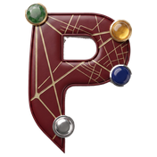

.plotedge.json holding every project, its features, feature types, notes and sketches. This is the file to keep if you want to restore onto another device.Restore a .plotedge.json backup exported from this or another device — features, photos, notes, sketches and the feature-type schema all come back intact. Imports are always additive: the file lands as a new project and nothing already on this device is overwritten.
Bring in a .gpkg or .csv file captured in QGIS, ArcGIS, or another field app.
Publishes a live, view-only map of this project's features to a free GitHub Pages site — shareable with anyone by link, responsive on phone or desktop. PlotEdge talks to GitHub directly from this browser; there's no PlotEdge server involved.
api.github.com — never sent to PlotEdge or anywhere else. Use "Disconnect" any time to remove it from this device; it doesn't touch anything already published.
PlotEdge runs fully offline with no server, so it can't write to a database directly from the browser. Fill in your connection details and get a ready-to-run command to load your latest GeoJSON export into PostGIS.
ogr2ogr command you run on your own machine after exporting GeoJSON above. Your database password is never entered here or sent anywhere by PlotEdge. A live "push" from the browser would need a backend proxy holding the connection string server-side, which is a separate, optional project since it makes the app network-dependent.
Photos always stay in this browser first. Turn on either option below to also back them up as they're captured, instead of only at export time.
<folder>/<Project name>/exports/, overwriting the same file each time (_latest) rather than piling up a new export on every single capture. The folder always holds one current snapshot, and the manual Export section below is still there whenever you want a timestamped copy instead.
Same no-server-required approach as photo backup above: paste an endpoint that takes a photo and returns a short label (e.g. "utility pole", "cracked pavement"), and PlotEdge tags each new photo automatically. This one needs network access when it runs, so it's the one part of PlotEdge that isn't fully offline.
{ image: dataUrl } to your endpoint and expects { label: "..." } back — your function is free to call whichever vision API/model you choose server-side; no keys are ever stored in this app. A photo is never blocked or lost if recognition fails or is unset — it just won't have a label.